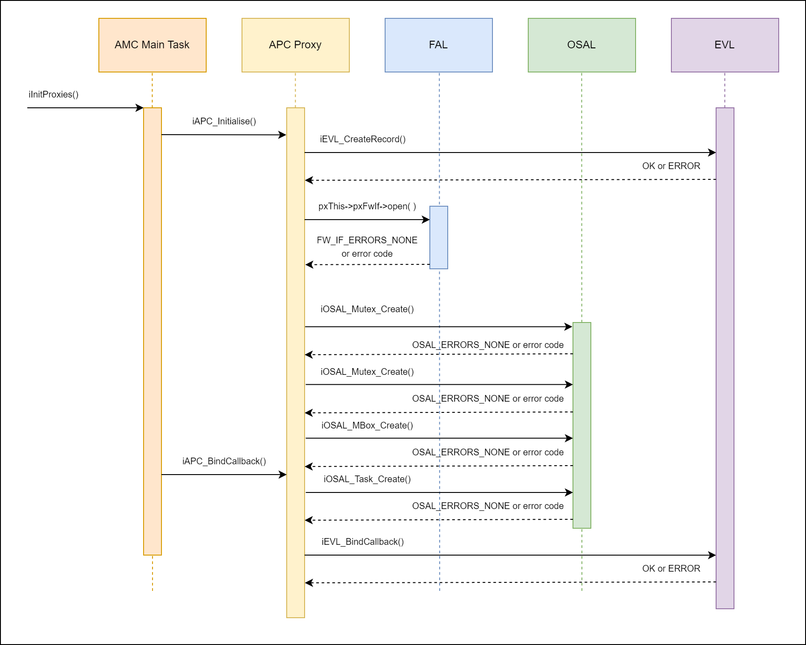
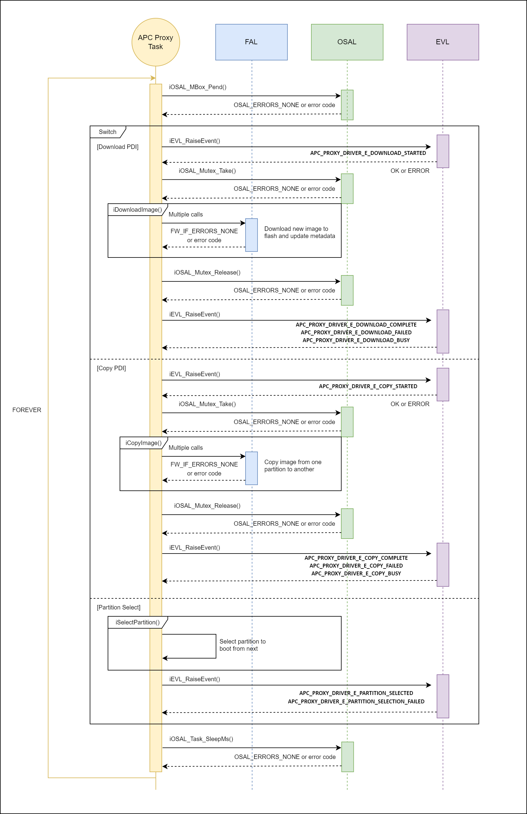

AMR Programming Control (APC) Proxy Driver¶
Overview¶
The APC proxy driver binds in the FAL provided in initialization. Internally, it also creates a number of resources including two mutexes for protection, a mailbox to handle asynchronous responses, and a task to handle the interaction with the FAL.
The APC task will:
Pend to its mailbox, and handle the incoming messages.
Download new images to flash and update metadata.
Copy images from one partition to another.
Select partition to boot from next.
The API consists of a number of functions to download/copy an image to a location in flash memory, select boot partition and receive Flash Partition Table (FPT) data. The flash APIs will post an internal message with the required data onto the mailbox. The APC proxy task will service this mailbox and make the appropriate calls to the FAL to download/copy an image or select a new boot partition.
The API also provides two debug functions to display and clear of the stat/error counters.
Enums¶
APC proxy driver event IDs.
APC_PROXY_DRIVER_EVENTS
/**
* @enum APC_PROXY_DRIVER_EVENTS
* @brief Events raised by this proxy driver
*/
typedef enum APC_PROXY_DRIVER_EVENTS
{
APC_PROXY_DRIVER_E_DOWNLOAD_STARTED = 0,
APC_PROXY_DRIVER_E_DOWNLOAD_COMPLETE,
APC_PROXY_DRIVER_E_DOWNLOAD_BUSY,
APC_PROXY_DRIVER_E_DOWNLOAD_FAILED,
APC_PROXY_DRIVER_E_FPT_UPDATE,
APC_PROXY_DRIVER_E_COPY_STARTED,
APC_PROXY_DRIVER_E_COPY_COMPLETE,
APC_PROXY_DRIVER_E_COPY_BUSY,
APC_PROXY_DRIVER_E_COPY_FAILED,
APC_PROXY_DRIVER_E_PARTITION_SELECTED,
APC_PROXY_DRIVER_E_PARTITION_SELECTION_FAILED,
APC_PROXY_DRIVER_E_FPT_FLAGS_UPDATED,
APC_PROXY_DRIVER_E_PROGRAM_STARTED,
APC_PROXY_DRIVER_E_PROGRAM_COMPLETE,
APC_PROXY_DRIVER_E_PROGRAM_BUSY,
APC_PROXY_DRIVER_E_PROGRAM_FAILED,
MAX_APC_PROXY_DRIVER_EVENTS
} APC_PROXY_DRIVER_EVENTS;
Boot device IDs.
APC_BOOT_DEVICES
/**
* @enum APC_BOOT_DEVICES
* @brief Enumeration of boot devices available
*/
typedef enum
{
APC_BOOT_DEVICE_PRIMARY = 0,
APC_BOOT_DEVICE_SECONDARY,
MAX_APC_BOOT_DEVICES
} APC_BOOT_DEVICES;
Structs¶
Device FPT headers.
APCProxyDriverFptHeader
/**
* @struct APCProxyDriverFptHeader
* @brief Structure to hold the FPT Header
*/
typedef struct APCProxyDriverFptHeader
{
uint32_t ulMagicNum;
uint8_t ucFptVersion;
uint8_t ucFptHeaderSize;
uint8_t ucEntrySize;
uint8_t ucNumEntries;
} APCProxyDriverFptHeader;
Device FPT partitions.
APCProxyDriverFptPartition
/**
* @struct APCProxyDriverFptPartition
* @brief Structure to hold a single FPT partition
*/
typedef struct APCProxyDriverFptPartition
{
uint32_t ulPartitionType;
uint32_t ulPartitionBaseAddr;
uint32_t ulPartitionSize;
uint8_t pdi_md5[MD5_SIZE];
uint32_t ulPdiSize;
union {
uint32_t ulPartitionFlags; /* User defined flags */
struct {
uint32_t powerup_flag:1; /* Power on load user partition flag
0: Disabled, 1: Enabled */
uint32_t reserved1:15; /* Reserved for future use */
uint32_t powerup_error:2; /* Power on load user partition error flag
0: Not Loaded, 1: Loaded, 2: Error */
uint32_t reserved2:14; /* Reserved for future use */
} user;
};
} APCProxyDriverFptPartition;
API¶
Initialise the APC proxy driver¶
This will open the FAL using the provided handle and make use of the OSAL to create two mutexes, a mailbox, and the proxy task.
iAPC_Initialise
/**
* @brief Main initialisation point for the APC Proxy Driver
*
* @param ucProxyId Unique ID for this Proxy driver
* @param pxPrimaryFwIf Handle to the primary Firmware Interface to use
* @param pxSecondaryFwIf Handle to the secondary Firmware Interface to use
* @param ulTaskPrio Priority of the Proxy driver task (if RR disabled)
* @param ulTaskStack Stack size of the Proxy driver task
*
* @return OK Proxy driver initialised correctly
* ERROR Proxy driver not initialised, or was already initialised
*
* @note A Primary Firmware Interface handle must be passed to iAPC_Initialise,
* the secondary Firmware Interface handle however is optional
* and can be set to NULL.
*
*/
int iAPC_Initialise( uint8_t ucProxyId, FW_IF_CFG *pxPrimaryFwIf, FW_IF_CFG *pxSecondaryFwIf, XLoader_ClientInstance *pXLoaderInst, uint32_t ulTaskPrio, uint32_t ulTaskStack );
Bind Callbacks¶
This API can be used to bind into a callback to be notified of events generated by the APC proxy using the EVL library. The current supported events are:
APC_PROXY_DRIVER_E_DOWNLOAD_STARTED
APC_PROXY_DRIVER_E_DOWNLOAD_COMPLETE
APC_PROXY_DRIVER_E_DOWNLOAD_BUSY
APC_PROXY_DRIVER_E_DOWNLOAD_FAILED
APC_PROXY_DRIVER_E_COPY_STARTED
APC_PROXY_DRIVER_E_COPY_COMPLETE
APC_PROXY_DRIVER_E_COPY_BUSY
APC_PROXY_DRIVER_E_COPY_FAILED
APC_PROXY_DRIVER_E_PARTITION_SELECTED
APC_PROXY_DRIVER_E_PARTITION_SELECTION_FAILED
APC_PROXY_DRIVER_E_FPT_FLAGS_UPDATED
APC_PROXY_DRIVER_E_PROGRAM_STARTED
APC_PROXY_DRIVER_E_PROGRAM_COMPLETE
APC_PROXY_DRIVER_E_PROGRAM_BUSY
APC_PROXY_DRIVER_E_PROGRAM_FAILED
iAPC_BindCallback
/**
* @brief Bind into this proxy driver
*
* @param pxCallback Callback to bind into the proxy driver
*
* @return OK Callback successfully bound
* ERROR Callback not bound
*
*/
int iAPC_BindCallback( EVL_CALLBACK *pxCallback );
Download Image¶
This will post a message (APC_MSG_TYPE_DOWNLOAD_PDI) onto the APC mailbox to be handled within the internal APC task to download an image to a location in NV memory.
iAPC_DownloadImage
/**
* @brief Download an image to a location in NV memory
*
* @param pxSignal Current event occurance (used for tracking)
* @param xBootDevice Target boot device
* @param iPartition The partition in the FPT to store this image in
* @param ulSrcAddr Address (in RAM) to read the image from
* @param ulImageSize Size of image (in bytes)
* @param usPacketNum Image packet number
* @param ulPacketSize Size of image packet (in KB)
* @param pucPdiMd5 Pointer to 16-byte PDI MD5 checksum
* @param ulPdiSize Size of full PDI file in bytes
* @param iLastPacket Boolean indicating if this is the last data packet
*
* @return OK Image downloaded successfully
* ERROR Image not downloaded successfully
*
*/
int iAPC_DownloadImage( EVL_SIGNAL *pxSignal, APC_BOOT_DEVICES xBootDevice, int iPartition, uint32_t ulSrcAddr,
uint32_t ulImageSize, uint16_t usPacketNum, uint32_t ulPacketSize, uint8_t *pucPdiMd5, uint32_t ulPdiSize, int iLastPacket );
Update FPT¶
This will post a message (APC_MSG_TYPE_DOWNLOAD_PDI) onto the APC mailbox to be handled within the internal APC task to download an image to a location in NV memory and update the FPT.
iAPC_UpdateFpt
/**
* @brief Download an image with an FPT to a location in NV memory
*
* @param pxSignal Current event occurance (used for tracking)
* @param xBootDevice Target boot device
* @param ulSrcAddr Address (in RAM) to read the image from
* @param ulImageSize Size of image (in bytes)
* @param usPacketNum Image packet number
* @param ulPacketSize Size of image packet (in KB)
* @param iLastPacket Boolean indicating if this is the last data packet
*
* @return OK Image downloaded successfully
* ERROR Image not downloaded successfully
*
*/
int iAPC_UpdateFpt( EVL_SIGNAL *pxSignal, APC_BOOT_DEVICES xBootDevice, uint32_t ulSrcAddr, uint32_t ulImageSize,
uint16_t usPacketNum, uint32_t ulPacketSize, int iLastPacket );
Copy Image¶
This will post a message (APC_MSG_TYPE_COPY_PDI) onto the APC mailbox to be handled within the internal APC task to copy an image from one partition to another.
iAPC_CopyImage
/**
* @brief Copy an image from one partition to another
*
* @param pxSignal Current event occurance (used for tracking)
* @param xSrcBootDevice Target boot device to copy from
* @param iSrcPartition The partition in the FPT to copy this image from
* @param xDestBootDevice Target boot device to copy to
* @param iDestPartition The partition in the FPT to copy this image to
* @param ulCpyAddr Address (in RAM) to copy the source partition to before writing it
* @param ulAllocatedSize Maximum size available to copy
*
* @return OK Image copied successfully
* ERROR Image not copied successfully
*
*/
int iAPC_CopyImage( EVL_SIGNAL *pxSignal, APC_BOOT_DEVICES xSrcBootDevice, int iSrcPartition,
APC_BOOT_DEVICES xDestBootDevice, int iDestPartition, uint32_t ulCpyAddr, uint32_t ulAllocatedSize );
Set Next Partition¶
This will post a message (APC_MSG_TYPE_PARTITION_SELECT) onto the APC mailbox to be handled within the internal APC task to select which partition to boot from.
iAPC_SetNextPartition
/**
* @brief Select which partition to boot from
*
* @param pxSignal Current event occurance (used for tracking)
* @param iPartition The partition to boot from on the next reset
*
* @return OK Partition successfully selected
* ERROR Partition not selected
*/
int iAPC_SetNextPartition( EVL_SIGNAL *pxSignal, int iPartition );
Enable Hot Reset¶
This will post a message (APC_MSG_TYPE_ENABLE_HOT_RESET) onto the APC mailbox to be handled within the internal APC task to enable the hot reset capability.
iAPC_EnableHotReset
/**
* @brief Enable the hot reset capability
*
* @param pxSignal Current event occurance (used for tracking)
*
* @return OK Hot reset successfully enabled
* ERROR Hot reset not enabled
*/
int iAPC_EnableHotReset( EVL_SIGNAL *pxSignal );
PDI Program Image¶
This will post a message onto the APC mailbox to be handled within the internal APC task to program a PDI image to memory.
iAPC_PdiProgram
/**
* @brief Program PDI image to a location in memory
*
* @param pxSignal Current event occurance (used for tracking)
* @param pxDownloadRequest Target boot device and parameters
* @param ulSrcAddr Address (in RAM) to read the image from
*
* @return OK PDI programmed successfully
* ERROR PDI programming failed
*/
int iAPC_PdiProgram( EVL_SIGNAL *pxSignal, const AMIProxyPdiDownloadRequest *pxDownloadRequest, uint32_t ulSrcAddr );
Set FPT Partition Flags¶
This will update the flags of a Flash Partition Table (FPT) partition in both the cached copy and the flash storage.
iAPC_SetFptPartitionFlags
/**
* @brief Set/Update the flags of a Flash Partition Table (FPT) Partition
*
* @param pxSignal Current event occurance (used for tracking)
* @param xBootDevice Target boot device
* @param iPartition Index of partition to update (0 is the 1st partition)
* @param ulFlags New flags value to set
*
* @return OK FPT partition flags updated successfully
* ERROR FPT partition flags not updated successfully
*
* @note This function updates the partition flags in both the cached copy
* and the flash storage
*/
int iAPC_SetFptPartitionFlags( EVL_SIGNAL *pxSignal, APC_BOOT_DEVICES xBootDevice, int iPartition, uint32_t ulFlags );
Set FPT Partition¶
This will update an FPT partition entry in both the cached copy and the flash storage.
iAPC_SetFptPartition
/**
* @brief Set/Update an FPT Partition entry
*
* @param pxSignal Current event occurance (used for tracking)
* @param xBootDevice Target boot device
* @param iPartition Index of partition to update (0 is the 1st partition)
* @param pucPdiMd5 Pointer to 16-byte PDI MD5 checksum (NULL to skip update)
* @param ulPdiSize Size of the PDI file in bytes
* @param ulFlags New flags value to set
*
* @return OK FPT partition updated successfully
* ERROR FPT partition not updated successfully
*
* @note This function updates the partition in both the cached copy
* and the flash storage
*/
int iAPC_SetFptPartition( EVL_SIGNAL *pxSignal, APC_BOOT_DEVICES xBootDevice, int iPartition, uint8_t *pucPdiMd5, uint32_t ulPdiSize, uint32_t ulFlags );
Read Flash Raw¶
This will read raw bytes from flash memory.
iAPC_ReadFlashRaw
/**
* @brief Read raw bytes from flash
*
* @param xBootDevice Target boot device
* @param ulOffset Offset in flash to read from
* @param pucBuffer Buffer to store the read data
* @param ulLength Number of bytes to read
*
* @return OK Data read successfully
* ERROR Data not read successfully
*/
int iAPC_ReadFlashRaw( APC_BOOT_DEVICES xBootDevice, uint32_t ulOffset, uint8_t *pucBuffer, uint32_t ulLength );
Get FPT Header¶
This will copy the locally stored Flash Partition Table (FPT) header data into the passed FPT header struct. This process is mutex protected.
iAPC_GetFptHeader
/**
* @brief Get the Flash Partition Table (FPT) Header
*
* @param xBootDevice Target boot device
* @param pxFptHeader Pointer to the FPT header data
*
* @return OK FPT header retrieved successfully
* ERROR FPT header not retrieved successfully
*
*/
int iAPC_GetFptHeader( APC_BOOT_DEVICES xBootDevice, APCProxyDriverFptHeader *pxFptHeader );
Get FPT Partition¶
This will copy the locally stored Flash Partition Table (FPT) partition data into the passed FPT partition struct. This process is mutex protected.
iAPC_GetFptPartition
/**
* @brief Get a Flash Partition Table (FPT) Partition
*
* @param xBootDevice Target boot device
* @param iPartition Index of partition to retrieve (0 is the 1st partition)
* @param pxFptPartition Pointer to the FPT partition data
*
* @return OK FPT partition retrieved successfully
* ERROR FPT partition not retrieved successfully
*
*/
int iAPC_GetFptPartition( APC_BOOT_DEVICES xBootDevice, int iPartition, APCProxyDriverFptPartition *pxFptPartition );
Print Statistics¶
Debug function used to display the statistic counters and errors.
iAPC_PrintStatistics
/**
* @brief Print all the stats gathered by the proxy driver
*
* @return OK Stats retrieved from proxy driver successfully
* ERROR Stats not retrieved successfully
*
*/
int iAPC_PrintStatistics( void );
Clear Statistics¶
Debug function used to clear the all statistics counters back to zero.
iAPC_ClearStatistics
/**
* @brief Clear all the stats in the proxy driver
*
* @return OK Stats cleared successfully
* ERROR Stats not cleared successfully
*
*/
int iAPC_ClearStatistics( void );
Get State¶
Gets current state of APC proxy driver
iAPC_GetState
/**
* @brief Gets the current state of the proxy driver
*
* @param pxState Pointer to the state
*
* @return OK If successful
* ERROR If not successful
*/
int iAPC_GetState( MODULE_STATE *pxState );
Sequence Diagrams¶
APC Proxy Initialization¶
Two APC API functions are called from the AMC main task (iAPC_Initialise and iAPC_BindCallback), in order to initialize the proxy.
iAPC_Initialise will call into the FAL to open with the provided handle, create two shared proxy mutexes, create a proxy mailbox and create the proxy task.
iAPC_BindCallback will bind the appropriate top-level callback function.

APC Proxy Task¶
The Task within APC has a number of responsibilities:
Pend to its mailbox, and handle the incoming messages.
Download new image to flash and update metadata.
Copy image from one partition to another.
Select partition to boot from next.
The sequence flow diagram below outline the top-level functionality of the APC proxy task. Some complexity has been hidden within local functions, namely iDownloadImage(), iCopyImage() and iSelectPartition().

Examples¶
Initialize Driver¶
This function should only be called once. It requires an unique ID for the proxy, used for signaling new events from the proxy, along with a handle to a FW_IF (already created and initialized), proxy driver task priority and stack size.
iAPC_Initialise Example
if( OK == iAPC_Initialise( AMC_CFG_UNIQUE_ID_APC, &xPrimaryIf, &xSecondaryIf, &xLoaderInst, AMC_TASK_PRIO_DEFAULT, AMC_APC_TASK_STACK ) )
{
AMC_PRINTF( "APC Proxy Driver initialised\r\n" );
}
else
{
AMC_PRINTF( "Error initialising APC Proxy Driver\r\n" );
}
Register For Callback¶
Define a function based on the function pointer prototype and bind in using the API.
iAPC_BindCallback Example
/* Define a callback to handle the events */
static int iApcCallback( EVL_SIGNAL *pxSignal )
{
int iStatus = ERROR;
if( ( NULL != pxSignal ) && ( AMC_CFG_UNIQUE_ID_APC == pxSignal->ucModule ) )
{
switch( pxSignal->ucEventType )
{
case APC_PROXY_DRIVER_E_DOWNLOAD_STARTED:
case APC_PROXY_DRIVER_E_DOWNLOAD_COMPLETE:
case APC_PROXY_DRIVER_E_DOWNLOAD_FAILED:
case APC_PROXY_DRIVER_E_DOWNLOAD_BUSY:
case APC_PROXY_DRIVER_E_COPY_STARTED:
case APC_PROXY_DRIVER_E_COPY_COMPLETE:
case APC_PROXY_DRIVER_E_COPY_FAILED:
case APC_PROXY_DRIVER_E_COPY_BUSY:
case APC_PROXY_DRIVER_E_PARTITION_SELECTED:
case APC_PROXY_DRIVER_E_PARTITION_SELECTION_FAILED:
case APC_PROXY_DRIVER_E_FPT_FLAGS_UPDATED:
case APC_PROXY_DRIVER_E_PROGRAM_STARTED:
case APC_PROXY_DRIVER_E_PROGRAM_COMPLETE:
case APC_PROXY_DRIVER_E_PROGRAM_BUSY:
case APC_PROXY_DRIVER_E_PROGRAM_FAILED:
/* TODO: handle events */
iStatus = OK;
break;
default:
break;
}
}
return iStatus;
}
/* Bind into the callback during the application initialisation */
if( OK == iAPC_BindCallback( &iApcCallback ) )
{
AMC_PRINTF( "APC Proxy Driver initialised and bound\r\n" );
}
else
{
AMC_PRINTF( "Error binding to Proxy Driver\r\n" );
}
Download image¶
Example of downloading an image to flash.
iAPC_DownloadImage Example
int iInstance = 0; /* set to desired request instance */
int iPartition = 0; /* set to desired partition number */
int iImageSize = 0; /* set to desired image size (bytes) */
uint32_t ulSrcAddr = 0; /* set to desired source (RAM) address */
uint16_t usPacketNum = 0; /* set to desired packet number */
uint16_t usPacketSize = 0; /* set to desired packet size */
APC_BOOT_DEVICES xBootDev = APC_BOOT_DEVICE_PRIMARY;
EVL_SIGNAL xSignal = { 0 };
xSignal.ucInstance = iInstance;
if( OK != iAPC_DownloadImage( &xSignal, xBootDev, iPartition, ulSrcAddr, ( uint32_t )iImageSize, usPacketNum, usPacketSize ) )
{
APC_DBG_PRINTF( "Error writing %d bytes to partition %d\r\n", iImageSize, iPartition );
}
else
{
APC_DBG_PRINTF( "%d bytes written from 0x%08X to partition %d\r\n",
iImageSize, ulSrcAddr, iPartition );
}
Copy image¶
Example of copying an image to flash.
iAPC_CopyImage Example
int iInstance = 0; /* set to desired request instance */
int iSrcPartition = 0; /* set to desired source partition number */
int iDestPartition = 0; /* set to desired destination partition number */
int iImageSize = 0; /* set to desired image size (max num bytes) */
uint32_t ulSrcAddr = 0; /* set to desired source (RAM) address */
APC_BOOT_DEVICES xBootDev = APC_BOOT_DEVICE_PRIMARY;
EVL_SIGNAL xSignal = { 0 };
xSignal.ucInstance = iInstance;
if( OK != iAPC_CopyImage( &xSignal, xBootDev, iSrcPartition, iDestPartition, ulSrcAddr, ( uint32_t )iImageSize ) )
{
APC_DBG_PRINTF( "Error copying partition %d partition %d\r\n", iSrcPartition, iDestPartition );
}
else
{
APC_DBG_PRINTF( "Partition %d copied to partition %d\r\n",
iSrcPartition, iDestPartition );
}
Sets¶
Set next partition¶
Example of selecting the next boot partition.
iAPC_SetNextPartition Example
int iInstance = 0; /* set to desired request instance */
int iPartition = 0; /* set to desired partition number */
EVL_SIGNAL xSignal = { 0 };
xSignal.ucInstance = iInstance;
if( OK != iAPC_SetNextPartition( &xSignal, iPartition ) )
{
APC_DBG_PRINTF( "Error selecting partition %d\r\n", iPartition );
}
else
{
APC_DBG_PRINTF( "Selected partition %d\r\n", iPartition );
}
Enable hot reset¶
Example of enabling hot rest capability.
iAPC_EnableHotReset Example
int iInstance = 0; /* set to desired request instance */
EVL_SIGNAL xSignal = { 0 };
xSignal.ucInstance = iInstance;
if( OK != iAPC_EnableHotReset( &xSignal ) )
{
PLL_DAL( APC_DBG_NAME, "Error enabling hot reset\r\n" );
}
else
{
PLL_DAL( APC_DBG_NAME, "Hot reset enabled\r\n" );
}
Gets¶
Get FPT header¶
Example of retrieving the FPT header.
iAPC_GetFptHeader Example
APCProxyDriverFptHeader xFptHeader = { 0 };
APC_BOOT_DEVICES xBootDev = APC_BOOT_DEVICE_PRIMARY;
if( OK != iAPC_GetFptHeader( xBootDev, &xFptHeader ) )
{
APC_DBG_PRINTF( "Error retrieving FPT header\r\n" );
}
else
{
APC_DBG_PRINTF( "======================================================================\r\n" );
APC_DBG_PRINTF( "FPT header:\r\n" );
APC_DBG_PRINTF( "\tMagic number . . . . . : 0x%08X\r\n", xFptHeader.ulMagicNum );
APC_DBG_PRINTF( "\tFPT version. . . . . . : 0x%02X\r\n", xFptHeader.ucFptVersion );
APC_DBG_PRINTF( "\tFPT header size. . . . : 0x%02X\r\n", xFptHeader.ucFptHeaderSize );
APC_DBG_PRINTF( "\tEntry size . . . . . . : 0x%02X\r\n", xFptHeader.ucEntrySize );
APC_DBG_PRINTF( "\tNum entries. . . . . . : 0x%02X\r\n", xFptHeader.ucNumEntries );
APC_DBG_PRINTF( "======================================================================\r\n" );
}
Get FPT partition¶
Example of retrieving an FPT partition.
iAPC_GetFptPartition Example
int iPartition = 0; /* set to desired partition number */
APCProxyDriverFptPartition xFptPartition = { 0 };
APC_BOOT_DEVICES xBootDev = APC_BOOT_DEVICE_PRIMARY;
if( OK != iAPC_GetFptPartition( xBootDev, iPartition, &xFptPartition ) )
{
APC_DBG_PRINTF( "Error retrieving FPT Partition %d\r\n", iPartition );
}
else
{
APC_DBG_PRINTF( "======================================================================\r\n" );
APC_DBG_PRINTF( "FPT partition %d:\r\n", iPartition );
APC_DBG_PRINTF( "\tPartition type . . . . : 0x%08X\r\n", xFptPartition.ulPartitionType );
APC_DBG_PRINTF( "\tPartition base address : 0x%08X\r\n", xFptPartition.ulPartitionBaseAddr );
APC_DBG_PRINTF( "\tPartition size . . . . : 0x%08X\r\n", xFptPartition.ulPartitionSize );
APC_DBG_PRINTF( "======================================================================\r\n" );
}